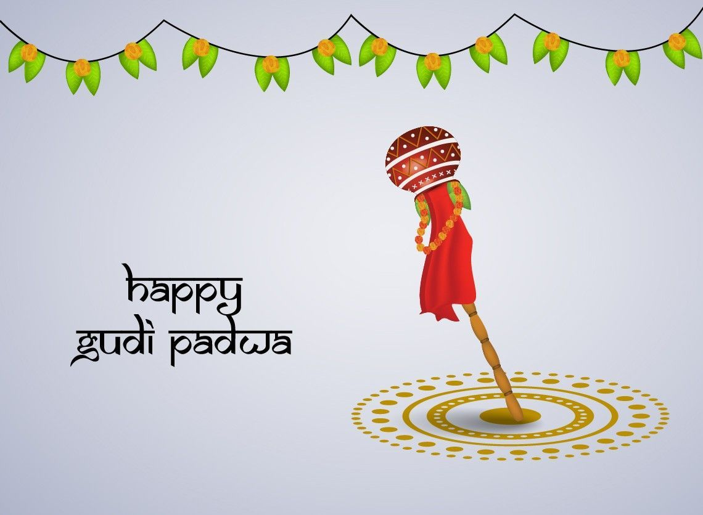

|  |
- Gudi Padwa is the traditional New Year for Hindus.
- It is first day of the Chaitra month.
- Padava or paadvo comes from the Sanskrit word pratipada, which is the first day of a lunar fortnight.
- First day of the bright phase of the moon is called Gudhi Padwa in Marathi.
- Kannada Hindus in Karnataka celebrate it as युगादि, ಯುಗಾದಿ (yugādi).
- Konkani Hindus celebrate the same occasion as सौसार पाडवो or सौसार पाडयो (saṁsāra pāḍavo / saṁsāra pāḍye), संसार (saṁsāra).
- Telugu Hindus celebrate the same occasion as Ugadi.
- Sindhi celebrates this day as Cheti Chand.
- Gudhi Padva signifies the arrival of spring and to the reaping of Rabi crops.
- On this day Hindu god Brahma created time and universe.
|